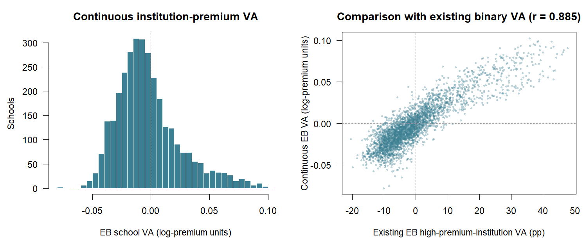

482,583 students, 3,256 high schools. Non-enrollees remain NA, as requested. The outcome is the centered institution FE from the existing MiFuturo model of log income on institution and field FEs, attached to first HE enrollment.
The student-weighted SD is 0.03101 log-premium units for EB school VA (unshrunk: 0.03392). The school-unweighted 90th-minus-10th-percentile EB spread is 0.06874. These are effects on the institutional-premium index, not estimated effects on realized wages.

2017-2020 grade-8 cohorts; ages 12-16; observed high-school RBD; observed math or verbal entrance score; complete VA baseline controls; HE enrollment at an institution with an estimated premium. Same baseline specification as current VA: separate cubic grade-4 math/verbal, linear imputed income, parents and early-childhood controls, middle-school GPA/attendance, cohort/sex/age/comuna/middle-years indicators, and high-school and middle-school FEs. No downstream PAES-score controls.
340 eligible observations are removed by the existing estimator singleton/perfect-fit rule. The fitted model is saved. School effects are centered using estimation-sample student counts. SEs use the current lfe centered-school bootstrap setting bN=100 (the package batches this into 128 actual draws) with seed 20261110. EB shrinkage follows the existing variance-minus-noise rule; the student-weighted mean reliability is 0.937.
These are observational school VA estimates conditional on HE enrollment, a downstream outcome. No lottery-IV validation is included. SEs treat estimated MiFuturo institutional premia as fixed.
| fe_source | students |
|---|---|
| observed_fe_legacy_key | 391465 |
| not_enrolled_missing | 129639 |
| enrolled_missing_institution_fe | 10247 |
| observed_fe_recovered_by_code | 91458 |
Joining on unique official institution codes recovers 91,458 students at 21 institutions whose FEs were missed by the older type/name key. The largest cause is INSITUTOS versus INSTITUTOS in professional-institute type labels. All formerly matched FEs are unchanged. Unsupported institutions remain NA. Existing binary outcomes and VA files are unchanged.
| n_students | n_schools | outcome_mean | outcome_sd | unshrunk_sd_student_weighted | eb_sd_student_weighted | eb_tau | mean_reliability_student_weighted |
|---|---|---|---|---|---|---|---|
| 482583 | 3256 | 0.01447 | 0.09204 | 0.03392 | 0.03101 | 0.03276 | 0.93665 |
| n_common_schools | existing_binary_n | unshrunk_pearson | eb_pearson | eb_spearman | eb_student_weighted_pearson |
|---|---|---|---|---|---|
| 3234 | 570772 | 0.86422 | 0.8849 | 0.84449 | 0.91518 |
The comparison uses common schools. The existing binary VA includes non-enrollees as zero and retains its older institution matching. These correlations therefore reflect differences in outcome coding and sample as well as removal of the premium cutoff. Weighted correlation uses continuous-VA estimation counts.
School values, raw and EB, SEs, counts, coverage, institution crosswalk, comparison data, actual regression model and numerical checks are in data/clean/continuous_institution_va/. Code: code/codex/continuous_institution_va/. Preparation checks validate original student-level FEs, IDs, cohorts, programs, enrollment, the original binary cutoff, and source integrity. Estimation checks validate normal equations, counts, student-weighted centering and the EB identities.